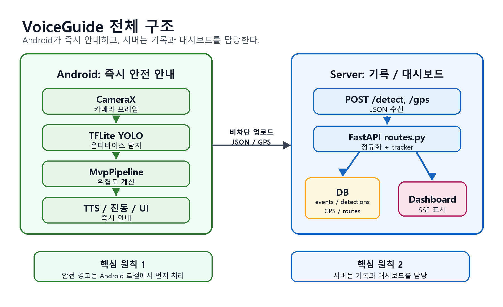

보행 중 장애물 안내
카메라 화면에서 사람, 차량, 의자 같은 객체를 탐지하고 위치와 위험도를 계산해 짧은 한국어 문장으로 안내합니다.
VoiceGuide MVP Status
VoiceGuide는 스마트폰 카메라로 앞쪽 장애물을 인식하고, 서버를 기다리지 않고 기기 안에서 바로 음성 안내와 진동 경고를 제공하는 Android MVP입니다.

카메라 화면에서 사람, 차량, 의자 같은 객체를 탐지하고 위치와 위험도를 계산해 짧은 한국어 문장으로 안내합니다.
"의자 찾아줘", "지금 뭐가 있어?" 같은 음성 명령을 받아 현재 인식된 객체를 기준으로 답변합니다.
위험도가 높아질수록 SHORT, DOUBLE, URGENT 패턴으로 구분해 사용자가 위험 정도를 빠르게 느끼도록 설계했습니다.
서버에 저장된 탐지 이벤트와 GPS 이력을 실시간 대시보드에서 확인할 수 있습니다.
/detect, /detect_json, /gps, /events, /history 경로가 구현되어 있습니다.
| API | 역할 | 현재 상태 |
|---|---|---|
POST /detect |
Android 탐지 결과를 서버에 저장하고 tracker를 갱신합니다. | 완료 |
POST /detect_json |
최근 탐지 상태를 저장하는 호환 경로입니다. | 완료 |
POST /gps |
사용자 위치와 이동 경로를 대시보드에 반영합니다. | 완료 |
GET /api/policy |
Android와 서버가 공유하는 탐지 정책을 배포합니다. | 완료 |
GET /events/{session_id} |
SSE로 대시보드에 실시간 이벤트를 전송합니다. | 완료 |